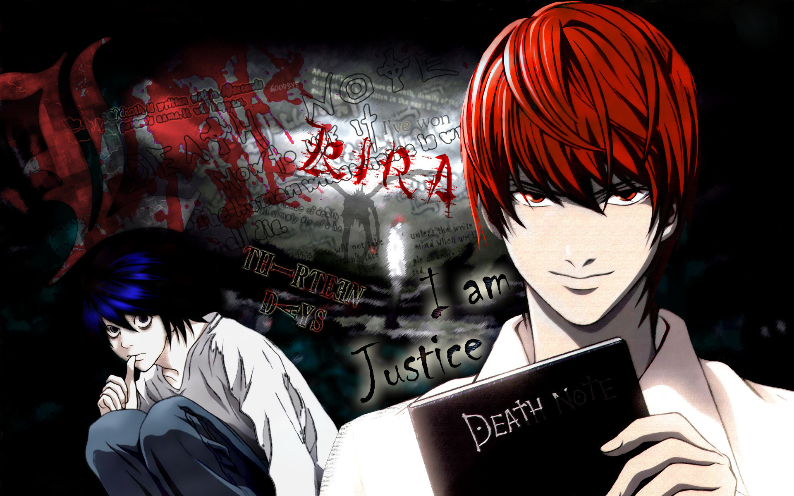

Anime
Historia del Anime
Comienza a principios del siglo XX en Japón. Inspirados por la animación occidental, los primeros animadores japoneses como Jun'ichi Kōuchi y Ōten Shimokawa comenzaron a experimentar con técnicas de animación tradicionales. Uno de los primeros cortometrajes conocidos es Namakura Gatana, creado en 1917.

Impacto del Anime
Ha tenido un profundo impacto en la sociedad, no solo en Japón, sino en todo el mundo. A través de sus historias, personajes y estilos visuales únicos, el anime ha logrado conectar con personas de todas las edades.

Diversidad de Géneros en el Anime
El anime no está limitado a un solo tipo de historia. Existen animes para niños, adolescentes y adultos, con temáticas que varían desde romance hasta ciencia ficción compleja.

Expresión Artística del Anime
El anime es considerado una forma de arte. Con su estilo visual, narrativas elaboradas y simbolismo, logra transmitir emociones profundas y reflexiones sobre la vida y la sociedad.